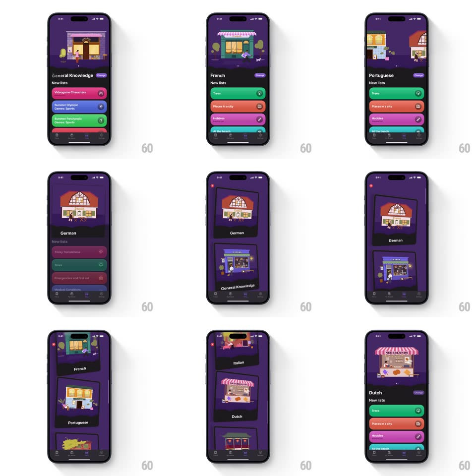

Media
Frame-by-frame

Rebuild this interaction 1:1: Study Snacks' shop - a vertical pager of language/category cards (General Knowledge, Spanish, French, German, Italian, Dutch), each with an isometric storefront illustration and colored "New lists" rows; scrolling tilts the cards in 3D and pages snap springily.

Rebuild this interaction 1:1: Study Snacks' shop - a vertical pager of language/category cards (General Knowledge, Spanish, French, German, Italian, Dutch), each with an isometric storefront illustration and colored "New lists" rows; scrolling tilts the cards in 3D and pages snap springily.
## Integration
Integration: stack-agnostic spec - springs given as stiffness/damping, timed motions as duration + curve; map every value to your framework and animation library of choice.
## Scene
Dark purple app. Each page: a large rounded card with a cozy isometric shop (LETRA bookstore, French cafe, Dutch "NEDERLANDS" market stall), the language name, and a stack of colored list rows ("Trees", "Places in a city", "Hobbies") with tiny icon badges. Bottom nav.
## Motion spec
Pattern: vertical card pager with scroll-tilt physics.
- Scroll/drag: the outgoing card tilts in 3D (rotateX up to -18deg as it exits top), scaling 0.94 and dimming 20%, while the incoming card counter-tilts from below (+18deg -> 0) - a rolodex of storefronts.
- Release: snap to the nearest page (spring ~300/20, gentle overshoot); the storefront illustration settles with a tiny independent bob (+-4px, spring ~340/18) - the shop "lands" after the card.
- During fast scrolls, tilt tracks velocity - cards visibly lean into the fling.
- List rows stagger in on page settle (fade + 12px, 240ms, 45ms apart); each row's icon badge pops last (scale 0.6 -> 1, spring ~440/18).
- Tap a row: it fills slightly brighter and chevrons in - drill-in via the list, not the card.
## Calibration
- One card per page, fully readable - the tilt is flavor, never an obstacle.
- The storefronts are the identity: each language gets its own shopfront architecture.
## Reduced motion
Cards crossfade; no 3D tilt or bob.
## Don't miss
- Tilt is scroll-driven, not time-driven - it must track the finger exactly.
- The incoming card's counter-tilt mirrors the outgoing - the pair reads as one hinge.